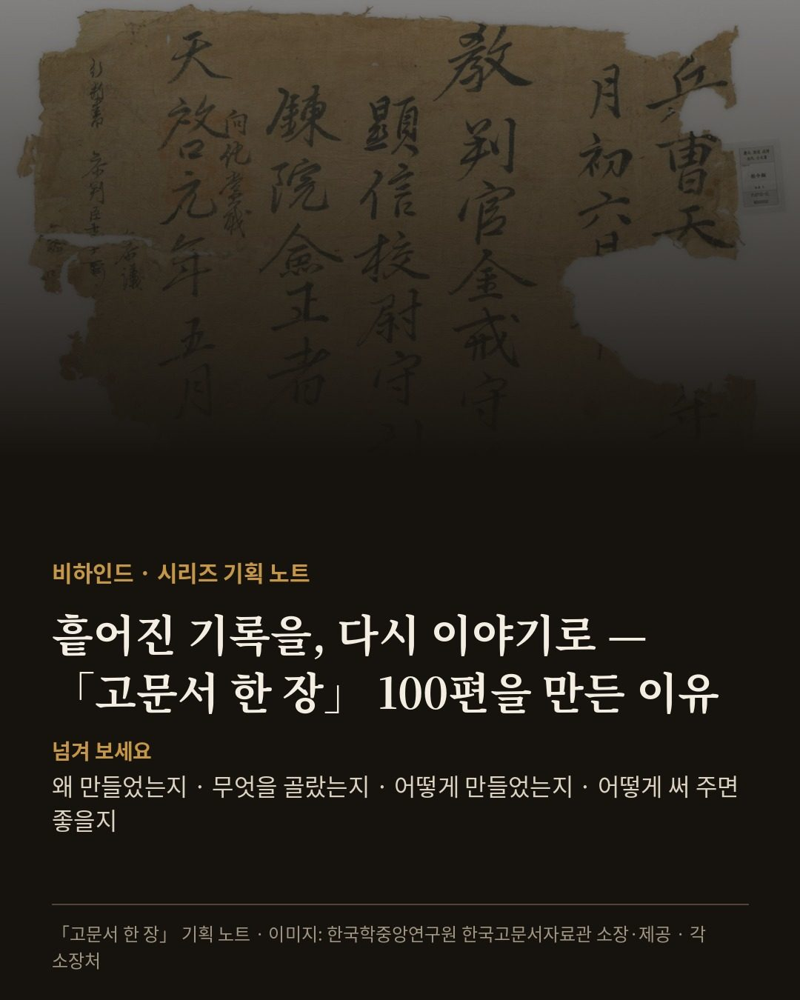
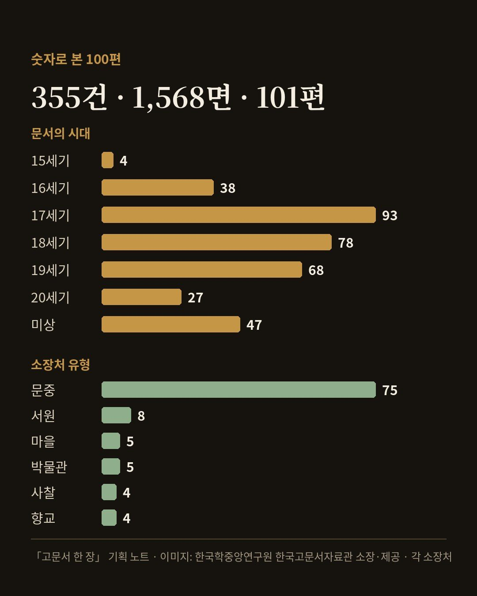
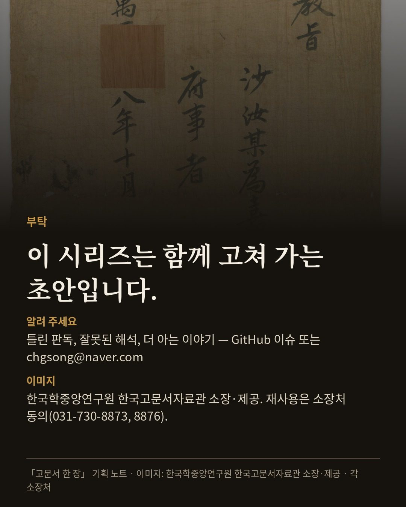

이미지 출처 — 예시의 고문서 사진은 한국학중앙연구원 한국고문서자료관 소장·제공 자료이며, 각 문서에 자료관 뷰어 원본 링크를 달았습니다. 자료관은 이미지 사용에 소장처 동의가 필요하다고 안내합니다(031-730-8873, 8876). 이 이미지를 다시 쓰려면 자료관에 문의하세요. 게재에 문제가 있으면 이슈나 chgsong@naver.com으로 알려 주시면 바로 내리겠습니다.
처음 오셨나요? — 여기 있는 것 전부, 한눈에
한국고문서자료관의 고문서를 한 장씩 원문으로 읽고, 영상 · 전시 · 활동지 · 카드뉴스 · 데이터로 만든 시리즈와, 그것을 누구나 만들 수 있게 한 도구(Claude 플러그인)가 있습니다. 하려는 일에 맞는 곳부터 여세요.
- 연대가 적힌 문서 532건 가운데 18세기가 162건(30%)으로 가장 많습니다. 가장 이른 문서는 1403년, 가장 늦은 문서는 1959년 — 556년에 걸칩니다.
- 문서 유형은 고신 74건 · 홍패 45건 · 유지 28건 순으로 많고, 모두 177가지입니다.
- 소장처 132곳은 12개 시·도에 걸쳐 있습니다. 가장 많은 곳은 경북(49편)입니다.
- 소장처 종류: 문중 130편 · 박물관 10편 · 서원 8편 · 마을 5편 · 사찰 4편 · 향교 4편.
🎬 보기
- 에피소드 「고문서 한 장」164편소장처 132곳 · 문중 · 서원 · 향교 · 사찰 · 마을 · 제주
- 릴스 · 가로 영상163개한국어 자막 포함 · 편마다 세로 9:16과 가로 16:9
- 시리즈 비하인드 릴스3편왜 만들었나 · 걸어온 길 · 만들며 있었던 일
📜 읽기
- 592건한자 위 한글 독음, □ 못 읽은 글자 · (?) 불확실 표시
- 전체 검색580건판독 · 번역 · 해제 · 이야기 전문에서 낱말 · 한자 하나로 (예: 乘馹 · 노비 · 편지)
- 문서 유형 사전고신 · 홍패 · 준호구 · 명문 … 문서마다 읽는 법 · 건수 · 시대 · 예
- 종이에 적힌 문장들549곳이야기에 인용한 "현대어(原文)" 전체 — 낱말 · 한자로 찾기
- 전체 연표532건1403–1959년의 문서를 연도순으로 · 편과 원본으로 바로
- 인물 찾아보기215명문서에 나온 이름을 가나다순으로 — 사람마다 나온 문서 · 편 · 원본, 여러 편에 걸친 인물
- 자동 초안 → 원문을 읽고 다듬은 "현대어(原文)" 이야기
- 정서 · 열기→절정→여운 · 물질 · 통로 — 같은 기록이 마음에 남게
📦 받아 쓰기
- 전체 결과물 표164편편마다 영상 · 전시 · 활동지 · 카드 · CSV · 홍보 글 바로 가기
- 전시 웹페이지 · 수업 활동지인쇄하면 전시 패널 · A4 활동지
- 922장1080×1350 · SNS에 바로
- 전체 데이터 묶음 (ZIP)164편의 판독 · 번역 · 해제 · 노트 · 분석 집계 — 이미지 없이 0.6MB · 텍스트 CC BY 4.0
- 기록 꾸러미 목록 (JSONL)164편편마다 맥락 · 출처 · 파생물 · SHA-256 고정값 · 검증 · 검토 · 작업 이력 — Dublin Core CSV · 편 폴더의 record.json · 설명
- 원문 · 번역 표 (CSV)문서명 · 연도 · 판독 · 번역 · 해제 · 원본 뷰어 링크 — 연구 · 데이터 수업용
✍️ 알기 — 기획과 비하인드
📢 퍼뜨리기
- 채널별 홍보 가이드인스타 · 유튜브 · 틱톡 · 페이스북 · 스레드 · X · 전시 · 책 · 웹툰 · 영상 · 광고, 4주 계획
- 편별 채널 홍보안편마다 바로 쓰는 문구 · 형식 · 지표
- 시리즈 게시 문구 · 시리즈 카드"📜 고문서 한 장 EP.NN" 형식
- 패키지 활용 가이드누가 무엇을 할 수 있나 · 부가가치 · 권리 · 윤리 체크리스트
🛠️ 만들기 · 연구하기
- 플러그인 설치 · 말로 시키기Claude에게 "OO 종가 문서로 전시랑 영상 만들어줘"
- 처음부터 끝까지 따라하기10단계찾기 → 받기 → 문구·전달 에디팅 → 점검 → 전시·영상 → 원본 묶음 → 시리즈 사이트
- 여러 소장처 비교문서 유형 · 세기 분포 비교표와 그래프, 연구 패키지
- GitHub 저장소 · 변경 기록코드 · 문서 · 오류 제보(문제가 있는 이미지는 바로 내립니다)
이 시리즈를 만든 이유
볼 수는 있지만 읽을 수는 없는 기록 — 흘림 한자와 이두, 옛 한글로 쓰인 고문서에 다리를 놓고 싶었습니다. 한 번에 한 장씩, 원문을 끝까지 읽고, 오늘의 말로 옮기고, 종이에 실제로 적힌 문장으로 이야기를 들려줍니다.
합격증을 받은 아버지, 굶주린 어머니를 위해 자신을 판 여인, 임금의 부름에 대신 답한 종, 바다 건너와 조선 사람이 된 장수 — 고문서는 누군가의 기쁨과 걱정이 적힌 종이입니다.
- 고른 기준 사람의 목소리가 들리는 한 줄 · 소장처·시대·신분의 다양성 · 공개된 이미지만
- 보이길 바란 모습 가볍게는 1분 릴스, 깊게는 원문 전문 · 번역 · 해제
- 두 가지 에디팅 문구 에디팅(무엇을 말할지) + 전달 에디팅(어떻게 · 무엇으로 · 어디로 전할지)
- 이렇게 써 주세요 수업(활동지 「선생님께」) · 전시 · 연구(CSV · 원본 묶음) · SNS
- 지킨 원칙 판독은 초안, □ 못 읽은 글자 · (?) 불확실, 이미지 재사용은 소장처 동의
시리즈 비하인드 — 2차 홍보





결과물 한눈에 보기 — 바로 가기
고문서 한 장마다 아래 결과물이 함께 만들어집니다. 버튼을 누르면 가장 최근 편(EP.163)의 실제 결과물이 바로 열립니다. 모든 편의 결과물은 맨 아래 전체 결과물 표에서 한 번에 찾을 수 있어요.
판독 전문 · 번역 · 해제 · 요약 · "현대어(原文)" 이야기.
SNS에 올리는 4:5 카드 묶음(표지 · 문서별 · 마무리).
편마다 3장 — 전하고 싶은 것 · 만들며 있었던 일 · 남겨 둔 질문.
자동 초안과, 원문을 읽고 다듬은 이야기를 나란히 비교.
새로 나온 편
왕과 반쪽씩 나눠 가진 병부 — 박경후가 받은 교서와 밀부 유서 네 장
1691년 여름, 황해도 관찰사가 된 박경후는 두 장의 왕명을 받는다. 하나는 길게 그 직책의 무게를 타이르는 교서, 다른 하나는 짧은 유서다. 유서에는 이렇게 적혀 있다. '나와 경만이 홀로 결단할 일이 있을지 모른다. 밀부가 아니면 할 수 없으니, 압(押)을 찍은 제3부를 준다.' 2년 뒤 전라도에서는 제17부, 9년 뒤 경기 장단에서는 제24부. 번호는 바뀌어도 문장은 같았다
에피소드 — 「고문서 한 장」
카드를 누르면 영상, 원문 읽기(판독 전문 · 번역 · 해제 · 요약), 카드뉴스, 문구 에디팅 전후, 전달 에디팅(표현 · 물질 · 통로 · 매개), 비하인드, 홍보 글을 한 창에서 볼 수 있습니다. 검색창에 인물·문서·지역(예: 유지, 안동, 언간)을 넣어 보세요. 창 안에서 ← → 로 이전·다음 편, Esc로 닫기.
맞는 에피소드가 없습니다. 검색어를 줄이거나 판독 · 번역 · 해제 전문에서 찾아보세요.
전체 결과물 표 — 164편의 영상 · 전시 · 활동지 · 카드 · CSV · 홍보 글 바로 가기
| 편 | 제목 | 소장처 | 바로 가기 |
|---|
여러 소장처 비교 (대량 유사 연구)
예시에 쓴 소장처 16곳(문중·사찰·마을·서원·박물관) 4,934건을 같은 방식으로 정리해 비교했습니다. 문중에는 고신(임명장)이, 마을에는 절목(규정)이, 서원에는 장부가 많듯 소장처마다 남긴 기록의 결이 다릅니다.
직접 해 보기
/plugin marketplace add changgi/archive-tools /plugin install aks-archive-harvester@changgi-archive-tools 💬 한국고문서자료관에서 유회당 권이진 종가 문서 받아줘 💬 이 집안 문서로 어떤 이야기를 만들 수 있을까? 💬 혼인과 호적 테마로 전시 웹페이지랑 카드뉴스 만들어줘 💬 대전 문중들을 비교 연구할 수 있게 패키지로 묶어줘 💬 완석정 유지로 전시·카드·영상까지 처음부터 끝까지 만들어줘 💬 공개해도 되는지 점검해줘
찾기부터 영상·시리즈 사이트까지 전 과정을 실제로 돌린 예제: 완성된 사이트 · 단계별 따라하기. 다른 명령 예제는 examples/README.md에 있습니다.